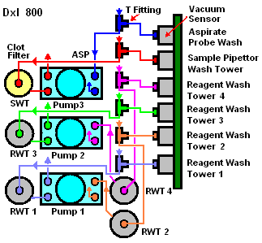
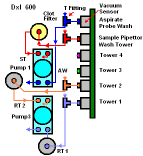
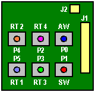
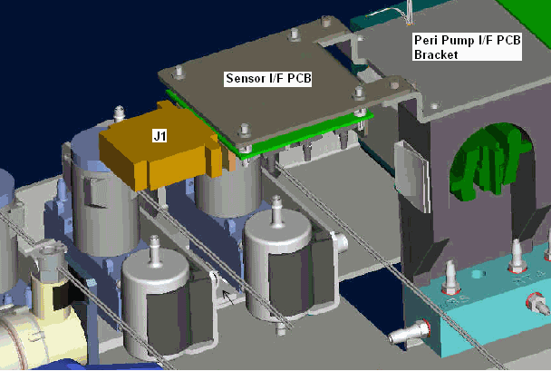
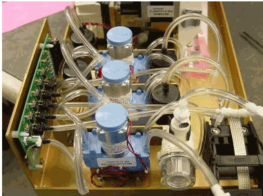
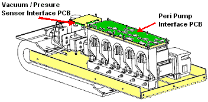
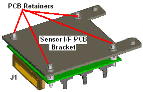
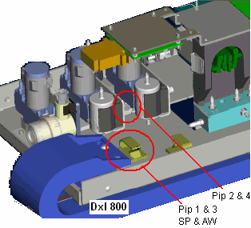
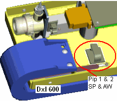

This procedure describes how to install the vacuum/pressure sensor interface PCB kit.
Required Materials: Kit contents—same for DxI 800 instrument and DxI 600 instrument, except for tube lengths:
Vacuum/pressure PCB
PCB bracket
New bracket for peri pump I/F PCB
Mounting hardware
Vacuum tubes
Reference Drawings





Power off the instrument.
Open the SPU.
Open the upper left cover of the instrument.
Loosen the locking screw.
The locking screw prevents the SPU from swinging outward from the instrument. It is not necessary to remove the screw because the SPU plate is slotted.
Remove the 3/16-in hex bolt located near the right end of the SPU cover.
Open the lower right access panel on the front of the instrument.
Pull the spring-loaded captive pin that holds the panel (located under the SPU) to the frame.
Grasping the SPU near the right end, swing the right end away from the instrument.
Warning: The SPU off-load area slides forward and rearward as the SPU is swung in and out. To prevent damage to the SPU or the off-load area, confirm that nothing obstructs the movement of the off-load area as the SPU is moved.
(For China and Canada Only.) On the front facing the edge of the Framus assembly, install the Chinese and French labels adjacent to the existing English label.
Note: The labels are in the DxI Installation Kit.
Replace the peri-pump I/F PCB bracket.
Pull open the fluidics drawer.
Remove the peri-pump interface PCB from the bracket (six retainers).

Note: The connectors can remain attached to the interface PCB.
Remove the peri-pump interface PCB bracket from the peri-pump and discard it.
Install the six PCB retainers onto the new peri-pump interface PCB bracket. Secure the new bracket to the peri-pump (six screws).
Mount the peri-pump interface PCB onto the bracket.
Mount the new vacuum/pressure sensor PCB.
Install the four PCB retainers onto the new vacuum/pressure PCB bracket.
Mount the PCB to the bottom side of the bracket with the J1 connector facing away from the two bracket mounting tabs.

Note: The TOP side of the bracket is stamped with sensor identification labels.
Attach the new peri pump interface PCB mounting bracket to the top of the vacuum/pressure PCB mounting bracket (two screws).
Connect the new vacuum/pressure PCB.
Warning: There is potential for biohazard on any fluid in the vacuum lines. The fluid is drainage from the wash towers.
For each vacuum sensor:
Remove and discard the tubing that connects the vacuum sensor to the T-fitting.
Connect one end of a new tubing segment to the T-fitting.
DxI 800: two tubing lengths of 10.5 inches, and four tubing lengths of 8.5 inches
DxI 600: four tubing lengths of 10.5 inches
Connect the other end of the new tubing to the appropriate sensor on the new interface PCB.
Note: Sensor identification labels are located on the top side of the PCB mounting bracket.
Mount the adhesive-backed tubing clamps to the drawer.
DxI 800: Two clamps
DxI 600: One clamp


Route the vacuum tubing through the clamps on the drawer surface and confirm that the tubing is not kinked.
Remove the J1 connector from the old vacuum/pressure sensor interface PCB and connect it to the new PCB.
Note: The old PCB can be removed or left in place.
Verify the vacuum response (and location) for each sensor.
Power on the instrument.
Initialize the system.
Select
Diagnostics > Device Diagnostics > Digital Devices > Peristaltic and Vacuum Pumps > Enable for each vacuum pump.
Standby: 0 ±5 mm Hg
Pump running and wash tower occluded: >-315 mm Hg
Note: Greater vacuum is a larger negative pressure.